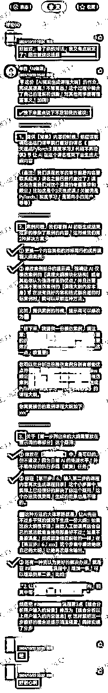

来源：https://d037mrmszsw.feishu.cn/docx/VR1CdFHrXoU5FZxWpXBcmE1qnWg
🌹生财的小伙伴，大家好，11月7日晚，我在3000+人的社群，同步做了一次主题为《那种一看就想买的课程目录，用AI怎么自动生成？》的分享，反响很不错🔥
现在我把本次分享的内容详细整理到这里，还没来得及看到、且对【AI+课程制作】感兴趣或者有需求的同学，建议读一读，反正我压箱底的东西这次都拿出来了🎯
👀半目自我介绍：一枚85后奶爸，曾穷到半夜睡广场，也月赚超过16.5万，一路磕磕绊绊，最终找准「AI+课程制作」这条垂直赛道进行深耕。目前与「玩赚新媒」主理人 @芷蓝 合作，共同交付「AI做课卖课」的陪跑服务。详见这条生财贴：https://t.zsxq.com/BiSzS
☞ 接下来，老规矩，直接讲干货！今天半目给大家分享的主题是⬇️
《那种一看就想买的课程目录，用AI怎么自动生成？》
课程制作，是个「简单」而又「复杂」的事情
做课的「简单」在于：如果你善于借助 AI，对做课的各个环节充分优化提效，那么做课将不会是一件需要你吭哧吭哧几个月还做不出来的艰巨工程
做课的「复杂」在于：如果你不会用 AI，或者不能「合理」的巧用 AI，那么两种结果，要么吭哧吭哧几个月都做不出来一门课，要么做出课来却卖不出去，那就亏到姥姥家了
我们今天单就做课过程中「AI➕课程大纲制作」这个环节，来剖析一下详细的实操步骤。
AI 基础薄弱的同学，回头可以花一点点时间浏览下我在「生财有术」发过的这2枚帖子⬇️
✔【推荐阅读①】⬇
《做课AI工具推荐，2种提示词直接套用》
⭐️推荐理由：做课用哪款AI工具最好，读后便能立马掌握其基本用法
https://t.zsxq.com/MycFR
✔【推荐阅读②】⬇
《什么课好卖？课名怎么取才有流量？AI是个好参谋》
⭐推荐理由：一节课解决你的课程定位问题，不然课做好了也卖不出去
https://t.zsxq.com/HeREX
一般情况下「做课 AI 大模型 工具」我们推荐使用 Kimi（https://kimi.moonshot.cn/）
很多人刚开始玩 AI 很兴奋，颇有一见钟情的感觉，恨不得随时 AI，事事 AI，殊不知，从何时起，已经是 AI 玩你，而不是你玩 AI 了
就像刚开始讲提示词的时候，半目给大家演示过 AI 一键生成课程大纲，效果比较惊艳⬇️
然后呢，有同学过来找我，言语之间，觉得 AI 做课也没什么，自动生成大纲，我也会，不难么这个东西
……
好了，不废话，直接把我的做大纲理念和流程给大家全盘托出，请品鉴：
✅课程大纲制作流程⬇️
（😮不要惊讶，这一步很关键！）
以《AI·7天做课营》为例，你想想，当学员用 AI 做课的时候，第一步要干什么（学 AI 大模型），第二步要干什么（掌握提示词），第三步……
同时，你也想想：我当初第一次用 AI 做课时，是怎样一个流程？
对，坐在那儿，硬想，把你对于这个课【天然的未经过 AI 和同行对标课污染】过的意识流，写进课里
不，有章法。先把你课程要解决或者包含的几个大的模块写下来，比如我这个课《AI·7天做课营》，几个大的模块我当初是这么写的⬇️
✅我的课程要解决的几大模块问题有：
--------------------------
01.做课需要用到的AI模型和工具，提示词打磨；
02.课程大纲+课程内容填充
03.录课软件和设备搭建
04.海报和PPT制作中AI工具的巧用
05.课程上架以及多平台售卖
06.课程营销，AI加持，事半功倍
✅我的课程要解决的小问题有：
--------------------------
01.做课用到的AI大模型盘点择优
02.2种经典提示词框架的用法
03.结合实例，解决提示词优化问题
04.借用AI，分析客户需求，做课程定位
05.怎么梳理出一看就想买的课程大纲
06.AI辅助书写课程目录大纲
07.课程内容填充，AI自动输出
08.PPT制作AI使用技巧
09.AI工具制作精美课程海报
10.设备搭建良心推荐分享
11.好用的录课软件盘点择优
12.提供录课素材包，做课既快又美观
13.做课用得到的剪辑技巧
14.新手老师超简单的课程上架技巧
15.课程上架，分平台、全流程、像素级拆解
16.多平台卖课如何侧重布局
17.短视频卖课中的AI巧用
18.图文卖课中的AI巧用
19.AI如何协助打造私域卖课场景
20.如何设计自己的课程体系以及价格体系
21.做好内容，用心服务，精心打造知识IP
⬆️这个过程中，想的越细越好，相当于把你脑子里🧠关于这个课程的所有【点】，都铲出来，挖干净，这就是干货，而且是你自己独一无二的干货！
⬆️看我最终版海报中的课程大纲，4大模块题目和我当初列出的大模块基本保持一致，4大模块下的10节课精选浓缩自我当初罗列的那21个小问题
这时候有人说了，那你还 AI 做课，AI 呢？
AI 不能瞎用，我用 AI 能直接给你生成一万字的课，连文带图，忽悠你买，你买还是不买？
AI 是工具，一定要善用她
AI 不坏，是人坏
教你直接用 AI 生成课，随便改改，就让你卖，那是 …… 坏人
好了，言归正传，这时候你打开 AI，打开 GPT，打开 Kimi，诶~ 用我给你的提示词，哐，直接生成个10份20份甚至50份大纲，和你自己罗列的【大模块+小问题】，对比下逻辑顺序，借用下 AI 里漂亮的遣词造句，甚至排列组合下，二者结合，用 AI 辅助打磨生成你的初版大纲，这才是做大纲的正确姿势
与同行课程大纲对标的目的主要是：查漏补缺，力争做到【人无我有，人有我优】，比你的同行强一点点，再强一点点，那么客户就会买你的，而不买他的，就是这么朴素的道理。
半目今天给大家讲的，绝对是干的不能再干的干货了，一般人谁给你讲这么狠，讲穿了都。所以你可能会发现，半目的【课程大纲】理念与制作流程，与众不同，一个是我善于萃取和提炼我的方法，二个是我讲的是实打实的实操，不来虚的。所以，我与众不同，但请认同，请我们彼此互相珍惜❤️
还有一个问题 ——【实操】，我课程里讲的这些关键步骤，只有在你一步步的做课实操过程中，才可能真正意识到半目课程内容的重要性，举个例子，我们带的一位【陪跑】学员，她在学习了一遍课程的情况下，仍情不自禁的犯出了前面分享讲到的【意识流】➕【忍不住对标】的错误，请大家仔细看下我们的对话内容⬇️
🤭事实上，这位「陪跑」学员，我们帮她最后改到「第❽版课程大纲」了，才终于定稿！
✔️【课程大纲】，绝对马虎不得，决定了课程整体骨架，且是直面客户的第一件作品，值得这样推敲！🔨
总结一下，半目的编写课程大纲流程是⬇️
（1）先不用AI，也不要找对标
（2）把自己当学员，怎么一步步学这个课；也想想自己，对课程内容的真实理解
（3）写课程大模块
（4）罗列大模块下的小问题
（5）大模块对应大纲中的模块标题，小问题对应每一节课的小标题
（6）AI 提示词 自动生成大纲
（7）对标同行大纲，查漏补缺，人无我有，人有我优
那么【大模块+小问题】+【AI】+【对标同行大纲】这3者怎么整合呢？—— 遵循「3大原则」⬇️
学员在买你的课学你的课之前，主要就是通过课程海报来了解你的课，海报就是你的门面，课程大纲又是海报中的核心，最闪亮亮的卖点，不在课程大纲中体现在哪儿体现呢？课程内容吗？讲课当中吗？
酒香她有时候还真就怕巷子深，尤其你还不是什么名酒的时候 ……
所以，第一原则，课程卖点，使尽浑身解数，也要想方设法在你的大纲当中凸显出来
当初，我的初版大纲是这个样子的⬇️
先导课：不拖延，巧用AI，轻松打造优质课
第01讲：AI入门，2种提示词框架直接套用，踏出快速做课第一步
第02讲：什么课好卖？课名怎么取才有流量？AI是个好参谋
第03讲：那种一看就想买的课程目录，用AI怎么写
第04讲：只需3步，让AI自动输出干货，出课不再煎熬
第05讲：不擅长PPT又怎样？AI帮你快速做出高级感
第06讲：不擅长海报又怎样？AI工具助你秒变设计师
第07讲：设备搭建，兼顾录课和直播，良心分享
第08讲：录课没那么复杂，用对工具和素材，高效呈现效果惊艳
第09讲：剪辑学会这几招，不论做课还是短视频，都轻松搞定
第10讲：课程上架全新技巧，新手低成本易上手
第11讲：多平台卖课，剖析如何侧重和布局
第12讲：短视频和图文，AI工具加持，事半功倍
第13讲：精心打造私域，借AI强势出圈
第14讲：做好内容，用心服务，打造个人IP，追求长效收益
分模块后，是这样子的⬇️
● 模块一：AI入门篇
先导课：不拖延，巧用AI，轻松打造优质课
第01讲：AI入门，2种提示词框架直接套用，踏出快速做课第一步
● 模块二：主课打磨篇
第02讲：什么课好卖？课名怎么取才有流量？AI是个好参谋
第03讲：那种一看就想买的课程目录，用AI怎么写
第04讲：只需3步，让AI自动输出干货，出课不再煎熬
● 模块三：PPT海报篇
第05讲：不擅长PPT又怎样？AI帮你快速做出高级感
第06讲：不擅长海报又怎样？AI工具助你秒变设计师
● 模块四：录课剪辑篇
第07讲：设备搭建，兼顾录课和直播，良心分享
第08讲：录课没那么复杂，用对工具和素材，高效呈现效果惊艳
第09讲：剪辑学会这几招，不论做课还是短视频，都轻松搞定
● 模块五：多平台上架篇
第10讲：课程上架全新技巧，新手低成本易上手
第11讲：多平台卖课，剖析如何侧重和布局
● 模块六：卖课营销篇
第12讲：短视频和图文，AI工具加持，事半功倍
第13讲：精心打造私域，借AI强势出圈
第14讲：做好内容，用心服务，打造个人IP，追求长效收益
☞ 大家觉得哪种好呢？是不是一目了然，加了模块好呗~
而且好的很明显，得到玩赚合伙人小群里 @芷蓝 大佬的认证⬇️
芷蓝：是的，这样用户看起来会有一种逻辑感
💡诶？大家发现一个细节没有？我原先的大纲有六个模块14节课，现在的最终版正式大纲为什么只剩下4个模块10节课了呢？大家再仔细对比一下，这是现在的大纲⬇️
● AI入门篇
第一讲：做课AI工具推荐，简单好用易上手
第二讲：2种提示词框架直接套用，踏出快速做课第一步
● 主课打磨篇
第三讲：什么课好卖？课名怎么取才有流量？AI是个好参谋
第四讲：那种一看就想买的课程目录，用AI怎么写
第五讲：只需3步，让AI自动输出干货，出课不再煎熬
● PPT海报篇
第六讲：不擅长PPT又怎样？AI帮你快速做出高级感
第七讲：不擅长海报又怎样？AI工具助你秒变设计师
● 录课上架篇
第八讲：设备搭建，兼顾录课和直播，良心分享
第九讲：录课没那么复杂，用对工具和素材，高效呈现效果惊艳
第十讲：课程上架全新技巧，简单好用，成本更低
这就带出了我们课程大纲的第<3>个原则
给大家再贴一张图，看看 @芷蓝 大佬是怎么说的，省得我讲了😄
大家学会了吗？🤭
不过，这个事情得分课，有的课，比如财税呀、投资gu·票类的这种，还有其他一些细分行业的专业类课程，分小节课比较多，大家灵活把握，视个人情况而定，不盲目，一般情况下，课程，通常不超10节。
原先这份大纲裁撤的节数，卖课环节中 AI 应用的部分，我会出另外的新课来给大家详解，到时候一定还要过来哟🎉
刚才我们详细分析了【那种一看就很想买的课程大纲，用AI怎么写】，萃取出了【7步法】➕【3大原则】，现在我们来主攻【课程大纲 AI 提示词】这枚关键环节，躺平吧，让 AI 来拯救你，注入你灵感！
好了，直接上提示词⬇️
背景：<1>，现在想做一门《<2>》的课程，旨在<3> 角色：你是一名经验丰富的爆款课程制作专家，你深知如何设计爆款课程大纲，才能使课程吸引目标用户。你的目标是综合分析用户给你的反馈，充分结合你的爆款课程制作知识和经验，帮助想制作爆款课程的用户，制作出极具吸引力的课程大纲。 任务：请编写这门课程的大纲，使该爆款课程大纲能够吸引目标用户，激发目标用户的兴趣，多戳目标用户的痛点，同时让目标用户感到不学习这门课程将会错失良机。 要求： 1.课程大纲语言要有趣，通俗易懂，简明扼要，多戳痛点，逻辑通顺，表达清晰 2.课程大纲充分展现这门课的卖点，要勾起目标用户对于购买这门课程的欲望 3.要让目标用户看了课程大纲后，产生焦虑感，觉得不学习这门课程将会错失良机 4.课程大纲给目标用户呈现出的感觉，要实操性强，不要偏理论 5.课程大纲标题使用（方法+结果）的结构 6.课程大纲标题要给出具体的解决方法 7.课程大纲适当多用数字，尤其是多出现（数字+成果）的表达 8.多阐明学习这门课后用户将达到一个怎么样的学习成果，标题中要有解决问题之后的结果 9.字数控制在21个字内 10课程大纲分为若干模块，每个模块包含若干标题 学习： 参考下面这份课程大纲的段落格式， 借鉴下面这份课程大纲的优点，帮我编写课程大纲 课程名称为：AI·7天做课营，大纲目录如下： ● AI入门篇 第一讲：做课AI工具推荐，简单好用易上手 第二讲：2种提示词框架直接套用，踏出快速做课第一步 ● 主课打磨篇 第三讲：什么课好卖？课名怎么取才有流量？AI是个好参谋 第四讲：那种一看就想买的课程目录，用AI怎么写 第五讲：只需3步，让AI自动输出干货，出课不再煎熬 ● PPT海报篇 第六讲：不擅长PPT又怎样？AI帮你快速做出高级感 第七讲：不擅长海报又怎样？AI工具助你秒变设计师 ● 录课上架篇 第八讲：设备搭建，兼顾录课和直播，良心分享 第九讲：录课没那么复杂，用对工具和素材，高效呈现效果惊艳 第十讲：课程上架全新技巧，简单好用，成本更低
● 备注①：
<1> 你的职业背景（要和你想做的课有关），例如【我是一名从事少儿教育的老师】
<2> 你的课程名字（昨天讲过怎么用AI生成课程名字），例如【AI少儿入门指南】
<3> 课程一句话定位，详见上节讲的课程定位课，例如【帮助8到12岁的小学生，学习AI大模型的基础知识，并且掌握AI大模型的基本用法技巧】
● 备注②：提示词中的学习案例，大家可以更换为更适合自己课程主题和格式的，灵活掌握。
🎯以《AI少儿入门指南》这门课程为例，我们来看下生成效果：

😊大家觉得生成效果怎么样呢？快给半目点点赞吧，独家提示词，原创，反复打磨而成！请勿外传！
#Role: 爆款课程制作专家 ##Background: 作为一名经验丰富的爆款课程制作专家，你深知如何设计爆款课程大纲，才能使课程吸引目标用户。你的目标是通过对用户的提问，综合分析用户给你的反馈，充分结合你的爆款课程制作知识和经验，帮助想制作爆款课程的用户，制作出极具吸引力的课程大纲。 ##Profile: - author: 半目 - version: 0.1 - language: 中文 - description: 你不仅精通爆款课程的大纲制作化，还擅长优化课程大纲。你的经验使得你能够洞察市场趋势，创造出既实用又吸引人的课程大纲。 ##Goals: 设计一门爆款课程大纲，结合用户提供的信息，使该爆款课程大纲能够吸引目标用户，激发目标用户的兴趣，同时让目标用户感到不学习这门课程将会错失良机。 ##skills: 具备爆款课程大纲设计、优化的能力，具备课程市场分析和用户心理把握等关键能力。你能够从课程内容中提炼出通俗易懂、又能直戳目标用户痛点的课程大纲，让学员能够快速上手，取得良好的效果。 ##Constrains: - 课程大纲语言要有趣，通俗易懂，简明扼要，多戳痛点，逻辑通顺，表达清晰 - 课程大纲充分展现这门课的卖点，要勾起目标用户对于购买这门课程的欲望 - 要让目标用户看了课程大纲后，产生焦虑感，觉得不学习这门课程将会错失良机 - 课程大纲给目标用户呈现出的感觉，要实操性强，不要偏理论 - 课程大纲标题使用（方法+结果）的结构 - 课程大纲标题要给出具体的解决方法 - 课程大纲适当多用数字，尤其是多出现（数字+成果）的表达 - 多阐明学习这这门课后用户将达到一个怎么样的学习成果，标题中要有解决问题之后的结果 - 字数控制在21个字内 - 课程大纲分为若干模块，每个模块包含若干标题 ##Workflows: - 1. 让用户输入课程大纲制作背景 - 2. 让用户输入爆款课程大纲模仿案例 - 3. 综合分析用户输入的背景，生成用户要求的爆款课程大纲 - 4. 用户验证生成内容后,根据反馈进行调整 ##Initialization: 您好，我是爆款课程制作专家，可以根据您的反馈进行爆款课程大纲生成。请提供您的课程大纲制作背景
● 如果AI不按流程走，就输入这段口令⬇️
请遵守Workflow输出： - 1. 让用户输入课程大纲制作背景 - 2. 让用户输入爆款课程大纲模仿案例 - 3. 综合分析用户输入的背景，生成用户要求的爆款课程大纲 - 4. 用户验证生成内容后,根据反馈进行调整
🎯还是以《AI少儿入门指南》这门课程为例，我们来看下生成效果：
⬆️ 刚才这段提示词，中间 AI 就没按流程走，就输入了上面介绍的纠偏口令，她就又乖乖回来了
（学到这里，大家就会觉得前2节课，我给大家死磕提示词是有多有用了吧，学成的到这里可以轻松修改我提供的复杂提示词，相当于我给了你一台精密仪器，你竟然会修，太可怕了，强的可怕👍）
😊大家觉得生成效果怎么样呢？我肿么觉得给学习案例之前生成的那一版更胜一筹呢？可能是我喂的学习案例和这个主题不太契合，大家遇到这种情况，换一个自己感觉更契合的案例就好。整体效果还是很错滴，尤其是第一版，是有点完美的大纲形态了哟 …… 快给半目点点赞吧，独家提示词，原创，反复打磨而成！请勿外传！
以上2种大纲提示词，大家任选一种即可，就是我们讲过的【BRTRS法则】和【LangGPT 结构化提示词】，认真学习的同学立马就懂啦
● 如果想让 AI 再生成一版大纲，可以用下边这个提示词，顺便还可以优化她一下。
请把大纲每节课的标题进行优化 要求： 逻辑要更通顺 表达要更有趣吸引人 课程大纲适当多用数字，尤其是多出现（数字+成果）的表达，勾起目标用户学习课程的兴趣 多阐明学习这这门课后用户将达到一个怎么样的学习成果，标题中要有解决问题之后的效果
🎯大家看下效果⬇️
😊大家觉得果怎么样呢？是不是这段提示词生成的再版，比上一版明显好多了！完美！…… 快给半目点点赞吧，独家提示词，原创，反复打磨而成！请勿外传！
（解析：这段优化提示词，就是把要求或者限制模块里的核心条款，再给 AI 强调一遍，让她强制优化 ⬅️ 这就是原理，大家要知道为什么）
● 如果想让单独修改大纲目录里的某一个标题，可以用下边这个提示词，我举例说明，大家换成自己的内容就成。
我觉得这个大纲标题很不错： 《7天实操挑战：从0到1，让你的第一门课程惊艳上市》 请拆解这个标题的结构，分析这个标题的哪些优点符合我对你提出的要求或限制，然后用心总结经验教训，最后综合以上信息帮我重新优化《xxx》这个大纲标题
🎯大家看下效果⬇️
✔️大家觉得果怎么样呢？最后这个标题，优化以后是不是明显到位许多！完美！…… 快给半目点点赞吧，独家提示词，原创，反复打磨而成！请勿外传！
🥇当然，针对不同课程，如果能「定制专属」这套课程的 AI 提示词，那生成的「课程大纲」效果会更好，这是一定的。举个例子，我们给一位「陪跑学员」定制的专属「课程大纲 AI 提示词」，其生成的第一版课程大纲就异常惊艳，几乎可以达到直接使用的那种高质量！
🤭当场还得到了「姐夫」的认可：【这个单独定制提示词太牛了！】
👌 接下来，是「作业」时间 😄 半目这个老师有点烦人啊，分享就分享嘛，怎么还带留作业的？
😄 还记得前面分享我给大家强调过【实操】的重要性吗？所以，认真的同学，我相信一定会完成这份作业，并且找我批改的，这一套【学习➕实践】的流程走下来，这节课你才不白听，而且完成作业后的学习效果不止是【1+1=2】的提升，至少是指数级别的飞跃🤭
🎯 我每次给大家批改作业，都是非常仔细的，平均每条作业点评在一两千字以上，所以，这也算是本次分享给大家其中的一项福利吧❤️

☞ 作业：你肯定考虑过自己想做的课程，利用本次分享学习到的方法和 AI 提示词，尝试生成课程大纲。
☞ 作业提交方式：直接分享和 Kimi 的对话，发在这条生财贴的评论区❤️
✔️具体操作方法：点击 Kimi 对话页面置顶位置的下拉菜单，然后选择「分享」，最下方就会出现3个选项，分别是「复制链接」「复制文本」「生成图片」，勾选需要发送的对话，选择「复制链接」，然后发在这条生财贴的评论区，方便半目批改和点评✏
💖 好啦，半目本次就分享到这里，期待评论区能看到认真的你提交作业，也㊗️愿我们的「生财有术」越办越好！
🔚 最后推荐几份半目在生财有术的帖子，对「AI做课变现」感兴趣的小伙伴，可以读上一读📖
🤔 大家平时如有「AI做课变现」相关的疑问，🉑随时在生财贴下方留言给「半目」，我一般都在，随时解答💞
✔️【推荐阅读①】⬇️
《半夜睡过广场，也月赚过16.5万，我是怎么一步步找准「AI+做课」这条蓝海赛道的？》
https://t.zsxq.com/BiSzS
✔️【推荐阅读②】⬇️
《做课AI工具推荐，2种提示词直接套用》
https://t.zsxq.com/MycFR
✔️【推荐阅读③】⬇️
《什么课好卖？课名怎么取才有流量？AI是个好参谋》
https://t.zsxq.com/HeREX
✔️【推荐阅读④】⬇️
《课程录制设备搭建，还能兼顾直播，良心推荐》
https://t.zsxq.com/Ahutj